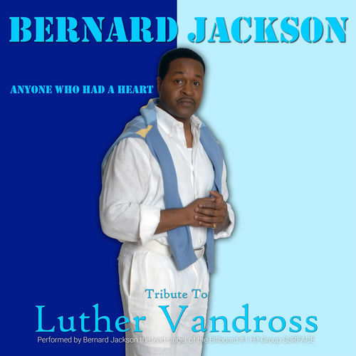

Bernard Jackson
Bernard Jackson is an American singer/bassist. He was the frontman for the 1980s/early 1990s R&B band, Surface from 1984 to 1994. He sang on hits like the No. 5 US/#1 US R&B "Shower Me With Your Love" and the No. 1 R&B and pop hit, "The First Time." He released his self-titled debut album in 2000.
Complete Discography & Tracklists (10)
2025 Can't Get Enough of Your Love, Babe 🎵 1 Tracks
2025 Have Yourself A Merry Little Christmas 🎵 1 Tracks
2025 Anyone Who Had A Heart 🎵 0 Tracks
No tracks registered.
2025 Superstar 🎵 0 Tracks
No tracks registered.